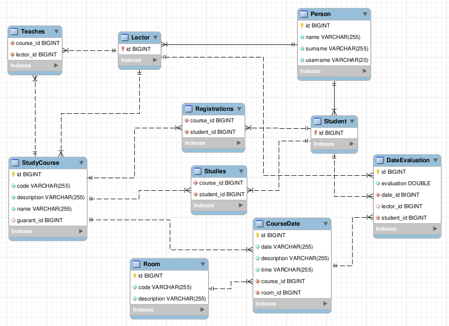

| Login | Password | Role |
|---|---|---|
| admin | admin | Administrator |
| xdrevo00 | xdrevo00 | Guarant, Lector |
| xmrkva00 | xmrvka00 | Guarant, Lector |
| xbucht00 | xbucht00 | Student |
| xrybar00 | xrybar00 | Student |
P�ilo�te odkaz na komentovan� video demostruj�c� pou�it� informa�n�ho syst�mu. Zam��te se na p��pady u�it� definovan� zad�n�m (nap�. registrace u�ivatele, spr�va u�ivatel� a �innosti jednotliv�ch rol�). Video nahrajte nap��klad na VUT Google Drive, kde ho bude mo�n� p��mo spustit z odkazu.
Used Java webserver - Wildfly 23.0.2
For versions of other used technologies, i.e. resteasy, hibernate etc. please refer to pom.xml file
import.sql script for populating DB on deployment of artifact can be found under src/main/resources
Configuration file used for webserver is standalone.xml
Currently we are using PostgreSQL DB and corresponding JDBC driver
Important packages
entity - contains all persistable entities
restfulAPI - contains all REST endpoints of the backend. Most of them require role based authorization
security - contains logic for managing users and their roles. However creating users should be done primarily from admin/* endpoint and not security/*
services - contains abstraction layer for servicing entities
Database tables are generated automatically by hibernate. Please note after shutdown of PostgreSQL DB image the data is not persist.
Database schema
Zde popi�te, kter� body zad�n� nejsou implementov�ny a z jak�ho d�vodu. Nap�. „Z �asov�ch d�vod� nebyla implementov�na spr�va u�ivatel�.” Pom��ete t�m zrychlit hodnocen�, kdy� neimplementovan� funkce nebudeme muset dlouze hledat.